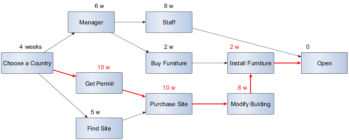

A Gantt Chart illustrates a project schedule by presenting scheduling and dependencies information about the activities involved in implementing a project.
The horizontal (x) axis of the chart shows the timescale over which the project work is carried out, and is divided into appropriate time units (the units of time used will depend on the overall timescale for the project).
The vertical (y) axis identifies the various tasks that must be carried out.
Each task is represented by a horizontal bar, occupying its own row on the y-axis.
The left-hand end of the bar is positioned on the x-axis in such a way that it represents the start date for the task, while the right hand end of the bar represents the finish date. The length of the bar therefore represents the duration of the task by definition.
Task dependencies may also be indicated using an arrow that links the end of one task to the beginning of the next.
To illustrate the principle of a Gantt Chart building, let's take the opening of a store abroad as project.
The first step is listing the tasks:
- Choose a country
- Recruit a manager
- Find a site
- Purchase the site
- Get a permit
- Recruit the staff
- Modify the building
- Buy furniture
- Install furniture
- Open
Next step is drawing a network diagram (or the activity-on-arrow diagram or PERT Chart) to organize tasks according to dependencies. To each task is assigned a duration estimation.

The longest path of planned activities to logical end points or to the end of the project is in red. The sequence of project network activities which add up to the longest overall duration. This determines the shortest time possible to complete the project.
We use this path to begin the Gantt Chart.
Then we position the other task according to the task they depend on.
The "find a site" is a floating task depending on "choose a country" task. The "find a site" task must occur before the "purchase a site" task.
The "manager" and the buy a furniture are sharing float tasks, coming after "choose a country" task and before "install furniture" task.
The best obvious idea in the project is to set the "recruit a manager" task as early as possible in this large floating space since it can help on other tasks and the "buy furniture" quite late before the installation.
The "recruit staff" task comes after the "recruit a manager" task and before the "open" task. Since it has a cost, the better idea is to set the "staff" task as late as possible. The "recruit staff" is a floating task depending on an other floating task. If the "recruit a manager" task takes longer or starts later, there will be less float space for the "recruit a staff" task.